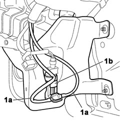
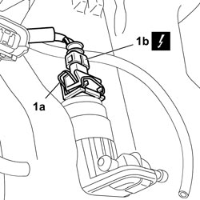
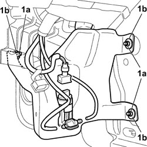
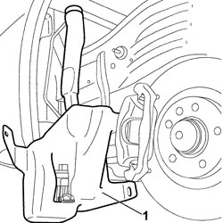

5050A10 WINDSCREEN WASHER FLUID RESERVOIR (IN ENGINE COMPARTMENT) - R+R
- Path
- Procedures > 50 AUXILIARY UNITS > 5050 SCREEN WASHERS AND HEADLAMP WASH/WIPE > 5050A WINDSCREEN AND HEADLAMP WASHER RESERVOIR > 5050A10 WINDSCREEN WASHER FLUID RESERVOIR (IN ENGINE COMPARTMENT) - R+R
- Kind
- repair procedure (removal / refitting; the operation number is the code)
- Applies to
- all engines; all production periods
- Interactive page
- https://sloeber94.github.io/elrnDB-fCrm/en/#/194000643
Applies to: all engines; all production periods
 Removing
Removing
 Refitting
Refitting- Turn the ignition key to the OFF position.
- Open the bonnet.
- Disconnect the negative battery terminal.
Description | Connector | |
|---|---|---|
BATTERY |
Op. 4450B02 LEFT FRONT WHEEL - R.R
Op. 7055B90 LEFT FRONT WHEEL ARCH LINER - R.R.
1. Disconnect the pipes (1a) from the windscreen washer pump (1b) and drain the fluid into a special container.

Applies to: all engines; all production periods
1. Working on the retaining clip (1a) disconnect the electrical connection (1b) from the windscreen washer electric pump motor.
Description | Connector | |
|---|---|---|
1b | WINDSCREEN/REARSCREEN ELECTRIC WASHER PUMP MOTOR |

Applies to: all engines; all production periods
1. Undo the three nuts (1a) fixing the reservoir to the bodysheel and keep the washers (1b).

Applies to: all engines; all production periods
1. Release the reservoir downwards and remove it from the vehicle.

Applies to: all engines; all production periods
Refitting
Removing- Check that the reservoir, the electric pump and the pipes are not damaged.
- Place the reservoir in the housing.
- Tighten the three fixing nuts and washers securing the reservoir to the bodyshell.
- Connect the electrical connection for the windscreen washer pump motor and attach the retaining clip.
Description | Connector | |
|---|---|---|
1b | WINDSCREEN/REARSCREEN ELECTRIC WASHER PUMP MOTOR |
- Connect the pipes to the screen washer pump.
- Connect the negative battery terminal.
Description | Connector | |
|---|---|---|
BATTERY |
- Top up the screen washer fluid level.
- Close the bonnet.
- Check that the jets are working.
Op. 7055B90 LEFT FRONT WHEEL ARCH LINER - R.R.
Op. 4450B02 LEFT FRONT WHEEL - R.R
- Connect the negative battery terminal.
Description | Connector | |
|---|---|---|
BATTERY |
Topics linked from this page (4)
- 4450B02 LEFT FRONT WHEEL - R.R
- 7055B90 LEFT FRONT WHEEL ARCH LINER - R.R.
- A001 BATTERY
- N022 WINDSCREEN/REARSCREEN ELECTRIC WASHER PUMP MOTOR